Your AI buddy
in the notch.
Zera hangs from your Mac's notch and keeps your day in one place: your Claude Code sessions, your tasks and timesheets, your files, clipboard, pull requests and calendar.
macOS 13+ · Apple silicon and Intel · no account, no API key
Recorded from the app with sample data.
Watch it work.
Approve from the notch.
While Claude Code works, Zera sprouts two glowing wings beside the notch: what it's doing, how far it's got, and the command it wants to run.
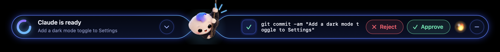
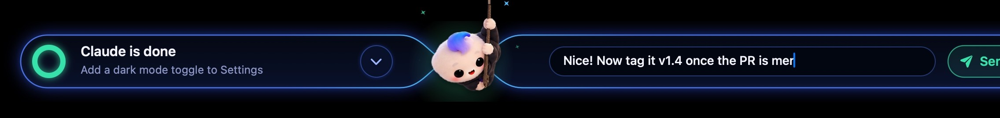
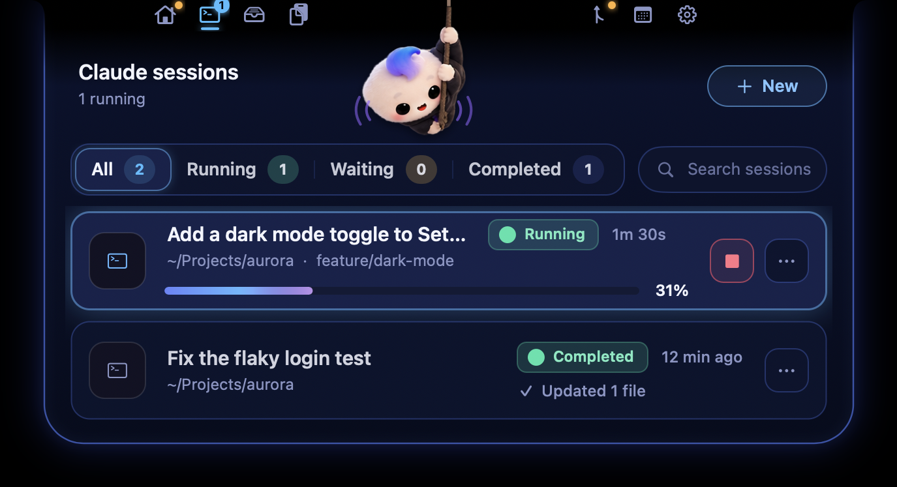
A to-do list that
keeps the time.
Add a task, press play, and a small orb floats on the screen edge with your time against the estimate. Click it and it opens right where it floats.
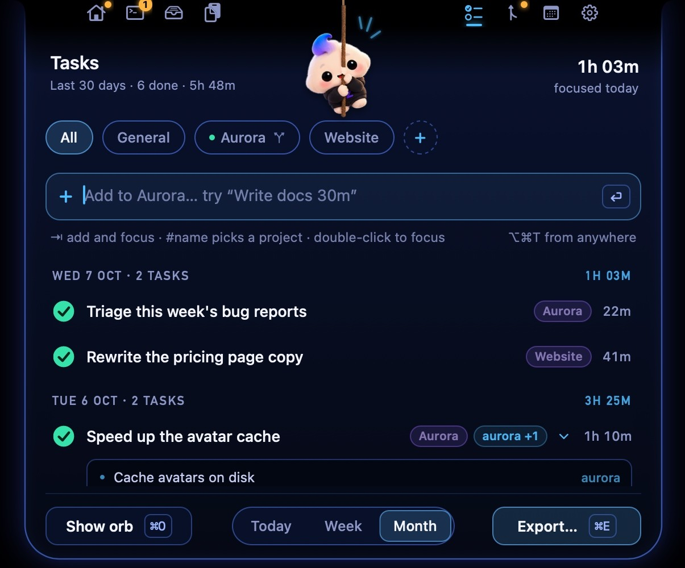
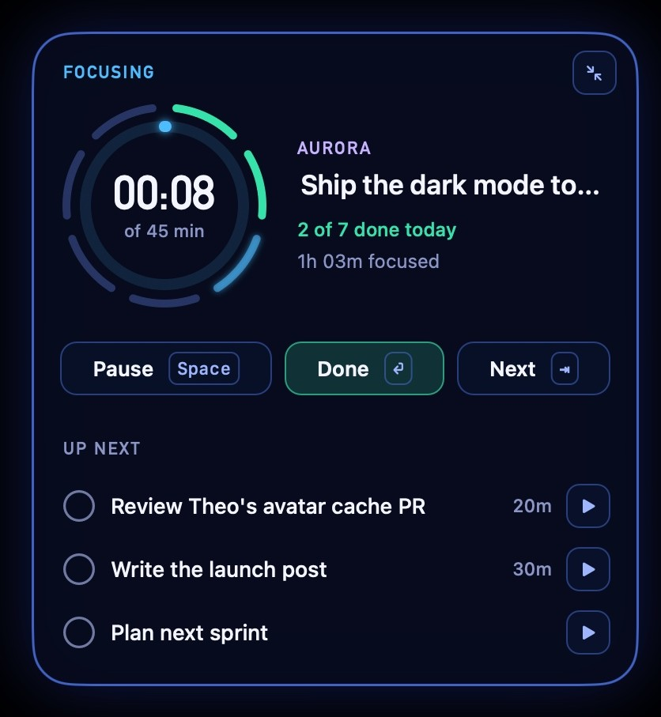
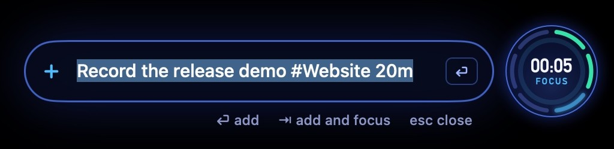
Month end in a minute.
Link a project to its repos. Your commits become done tasks, grouped by Claude into the work you actually did. Then copy it day by day into your timesheet.
Link your repos
One repo, or a folder of them. Only your commits count, from every branch.
Claude groups them
A month of commits becomes a few clear tasks a day, with the repo each came from, in seconds.
Click a day, paste it
Each day copies as a clean list. Times rounded to quarter hours if you want them, or export to Excel and CSV.
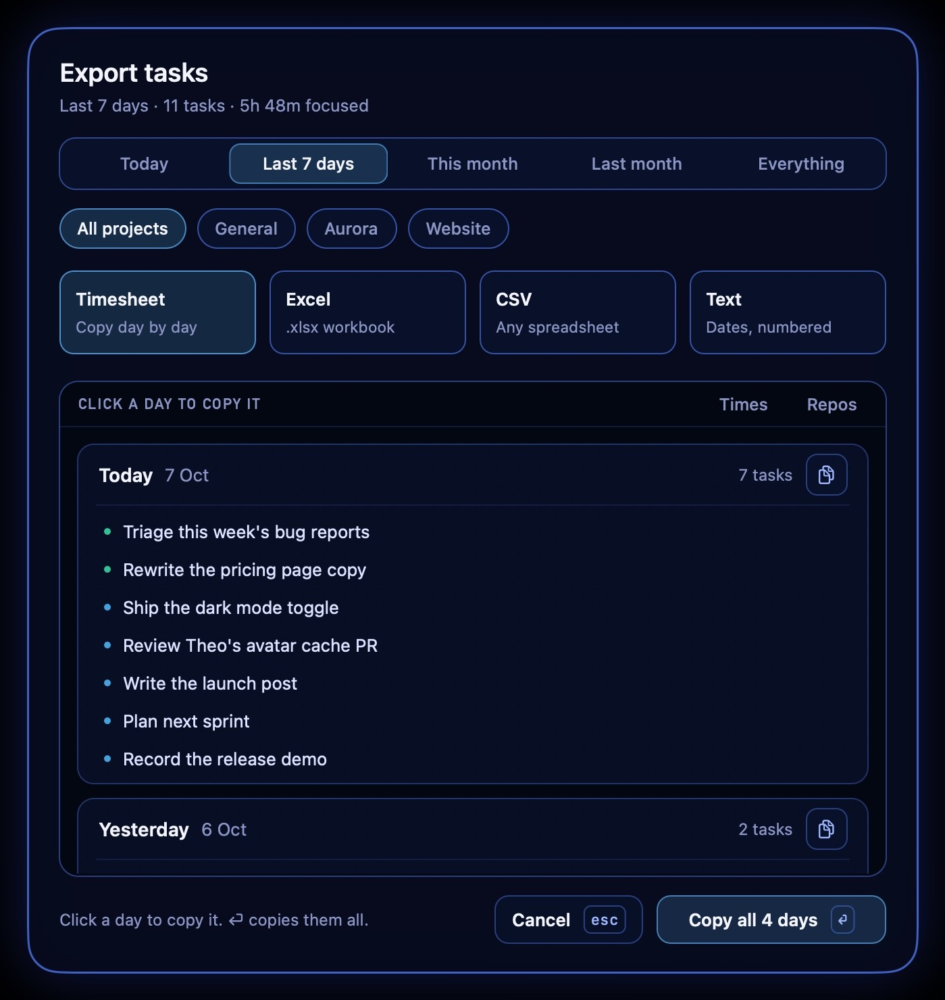
Hover her. The notch opens.
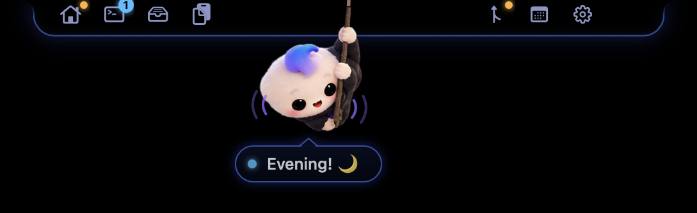
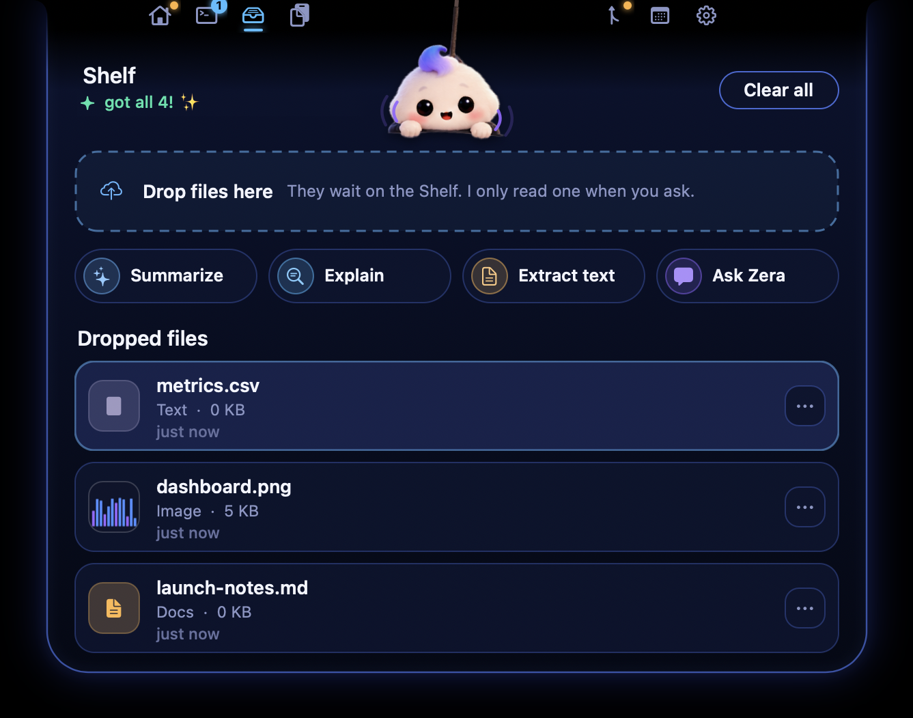
Files shelf
Drop files on the notch, then ask Claude to summarize, explain or pull out what matters.
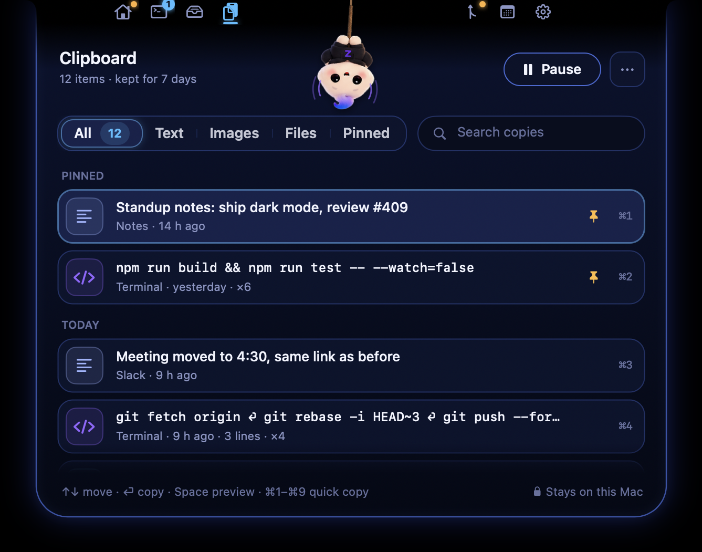
Clipboard history
Everything you copied, searchable. Passwords and private copies are never kept.
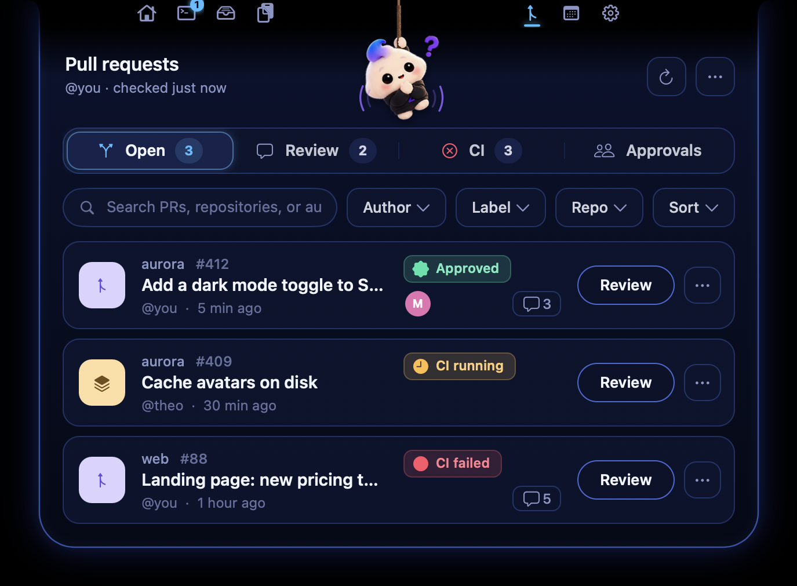
Pull requests
Reviews you owe, checks, approvals and waiting workflow runs.
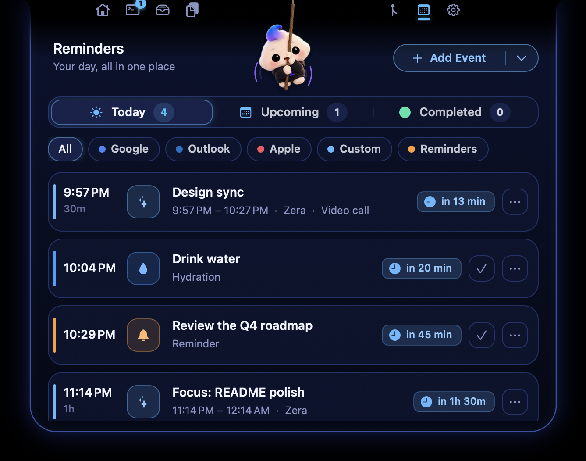
Reminders and calendar
Meeting heads-ups with a join button, breaks and water, from macOS Calendar.
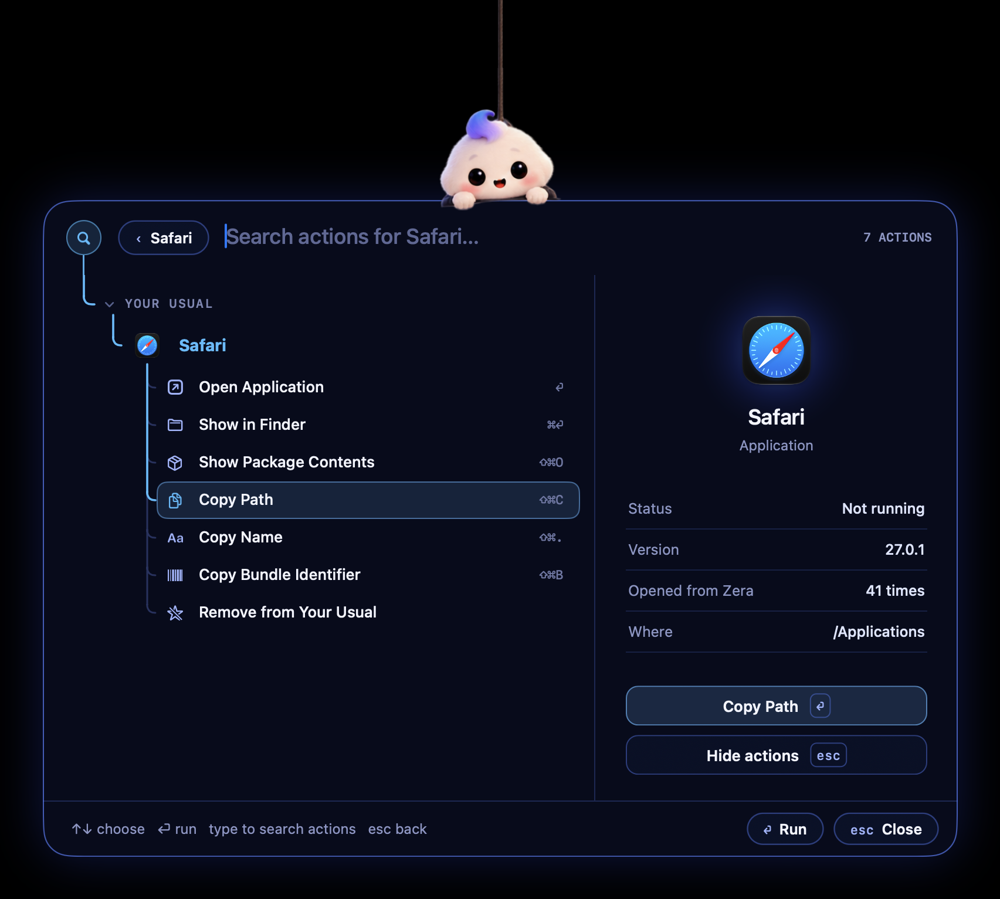
App opener
⌥Space brings down a tree of your apps; ⌘K for actions and Quit All.

And her
She reacts to what you do, dozes off when you're away, and cheers when the build goes green.
Your Mac.
Your data.
No account, no analytics, no telemetry, no update service. Zera runs your own Claude Code login; nothing goes anywhere you didn't ask.
Three steps.
- 1Download Zera.dmg from the latest release.
- 2Drag Zera into Applications and open it.
- 3Sign in to Claude Code once. Zera finds it on its own.
Or build it yourself
No Xcode project and no dependencies: just Swift and the Command Line Tools.
Questions
Does it need an API key or an account?
No. Zera uses the Claude Code CLI you're already signed in to. An Anthropic API key is optional, and there's no Zera account at all.
My Mac has no notch.
Zera hangs from the middle of the menu bar instead, and everything works the same.
How are commit times worked out?
From the gaps between your commits, capped so a lunch break doesn't count. Round to quarter hours in the timesheet if you like, and check them before you submit.
Will it slow my Mac down?
No. It's a native Swift app with no web views. Timers only run while something is actually happening.
Is it really free?
Yes, and open source on GitHub. Issues and pull requests are welcome.